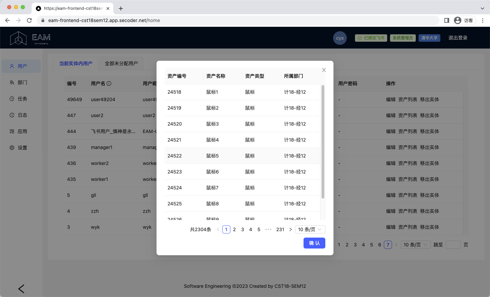
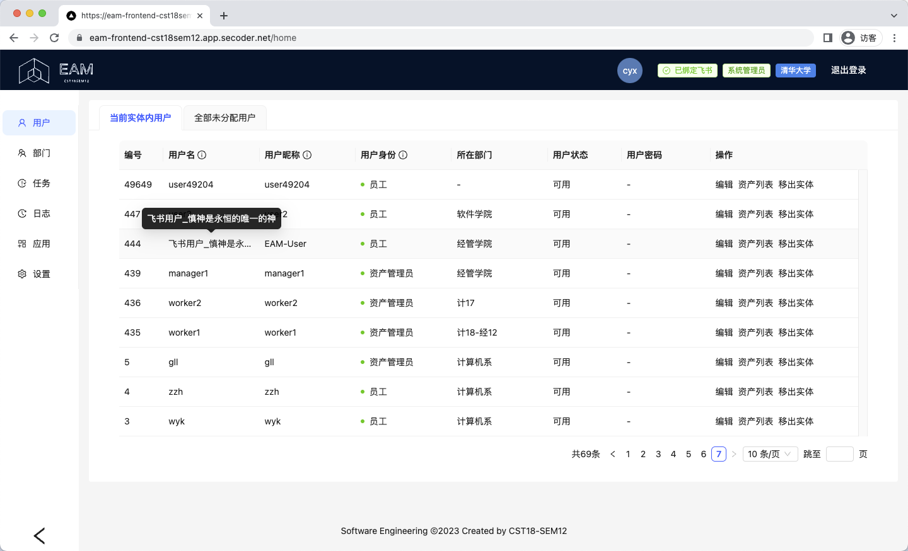
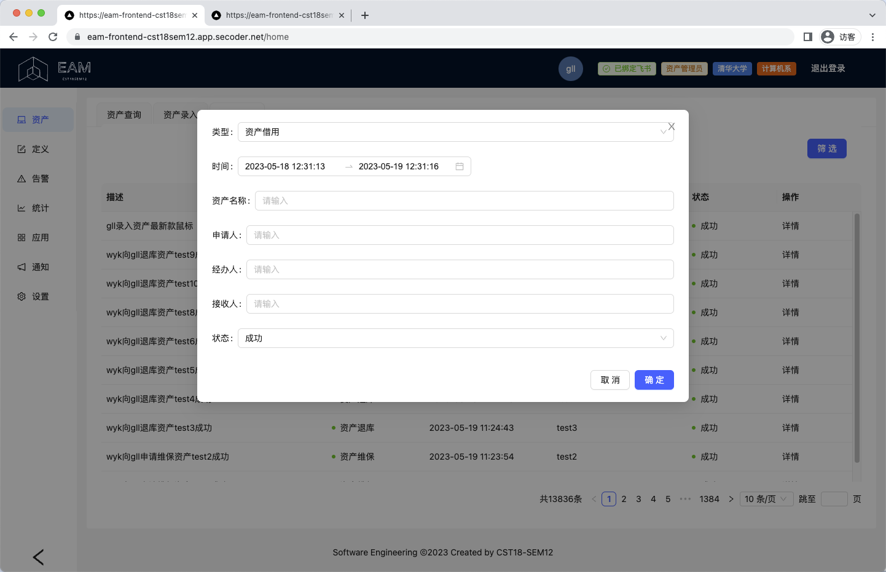

测试文档
Note
本文档将详细阐述 EAM 所实现的各个原始需求以及如何进行查看与验证。在本次项目中， 把bug都改对 (CST18SEM12) 小组合作开发的 EAM 企业固定资产管理系统 顺利完成了从 37 个基本需求与 2 个拓展需求，下面将对每个需求的实现进行详细阐述。
一、原始需求完成情况¶
| 原始需求 | 交付情况 | 原始需求 | 交付情况 | 原始需求 | 交付情况 |
|---|---|---|---|---|---|
| 01.登录登出 | Sprint 1 | 14.飞书人事管理 | Sprint 3 | 27.资产领用 | Sprint 3 |
| 02.用户管理 | Sprint 2 | 15.业务实体定义 | Sprint 1 | 28.资产退库 | Sprint 3 |
| 03.角色权限 | Sprint 4 | 16.资产分类定义 | Sprint 2 | 29.资产维保 | Sprint 3 |
| 04.组织数据管理 | Sprint 2 | 17.资产属性定义 | Sprint 2 | 30.资产转移 | Sprint 3 |
| 05.员工数据管理 | Sprint 2 | 18.资产标签定义 | Sprint 2 | 31.资产扫描 | Sprint 3 |
| 06.应用门户 | Sprint 3 | 19.资产录入 | Sprint 2 | 32.资产统计 | Sprint 4 |
| 07.应用管理 | Sprint 3 | 20.资产信息变更 | Sprint 2 | 33.资产折旧 | Sprint 4 |
| 08.待办任务 | Sprint 3 | 21.资产查询 | Sprint 2 | 34.资产告警 | Sprint 4 |
| 09.操作日志 | Sprint 3 | 22.资产批量导入 | Sprint 3 | 35.安全要求 | Sprint 4 |
| 10.导入导出管理 | Sprint 3 | 23.资产清退 | Sprint 3 | 36.易用性要求 | Sprint 4 |
| 11.飞书账号绑定 | Sprint 3 | 24.资产调拨 | Sprint 3 | 37.性能要求 | Sprint 4 |
| 12.飞书消息推送 | Sprint 3 | 25.资产历史 | Sprint 3 | 38.用户信息显示 | Sprint 2 |
| 13.飞书审批管理 | Sprint 3 | 26.资产查看 | Sprint 3 | 39.用户信息修改 | Sprint 2 |
二、原始需求测试¶
01. 登录登出¶
用户可以登录系统，可以登出系统。
-
需求说明：用户 登录系统/登出系统
-
演示视频链接：https://cloud.tsinghua.edu.cn/f/8d71f15dbb644c518089/
进入项目网址，即显示登录界面。
如果已注册账号，可以直接输入账号密码登录；如果账号仍处于登录状态，用户可以在弹出的对话框中选择确认自动登录，将无需输入密码。如果没有账号，可以点击“现在注册”按钮，进入注册界面。
注册时，需要输入用户名、密码和确认密码。密码要求必须包含字母和数字，且长度在 8 至 16 位之间；如果密码与确认密码不一致，会提示“注册失败：两次输入的密码不相同”。注册成功后，会自动跳转到登录界面。
登录成功后，会自动跳转到主界面。此时，可以点击右上角的“退出登录”按钮，退出登录。
02. 用户管理¶
系统管理员可以创建维护系统的用户，重置用户密码，锁定解锁用户，设置用户角色。
-
需求说明：
- 超级管理员 将未分配的用户设为系统管理员
- 系统管理员 将用户拉入业务实体，并管理业务实体内的用户
-
演示视频链接：https://cloud.tsinghua.edu.cn/f/198b831cf90b4aa5be75/
进入系统管理员账号，点击侧栏的“用户”按钮，进入用户管理界面。
用户管理界面中可看到“当前实体内用户”与“全部未分配用户”。对于“当前实体内用户”，可以进行修改用户名与昵称、锁定解锁、设置角色、重置密码、删除等操作。对于“全部未分配用户”，可以将其加入当前实体（加入后默认身份为员工）。
03. 角色权限¶
系统管理员可以创建维护系统的角色。
-
需求说明：系统管理员 查看资产管理系统内各角色的权限清单
-
演示视频链接：https://cloud.tsinghua.edu.cn/f/c79b12afbfe64a0ba7fa/
进入系统管理员账号，点击侧栏中的“权限”按钮，即可查看超级管理员、系统管理员、资产管理员、员工四种角色的权限。
此外，系统管理员可以在用户管理员界面修改和维护用户角色。
04. 组织数据管理¶
系统管理员查看和维护企业的组织部门数据。组织可以是多级。组织用于员工的归属和资产的挂账部门。
-
需求说明：系统管理员 查看和维护企业的组织部门数据
-
演示视频链接：https://cloud.tsinghua.edu.cn/f/160b1f6dff124a12bfd8/
进入系统管理员账号，点击侧栏的“部门”按钮，进入组织管理界面。
组织管理界面以树状结构展示了部门的层级关系。可以对部门进行增加、修改、删除、指定资产管理员等操作。系统管理员可以通过指定某个部门的所属部门来调整部门的层级关系。
05. 员工数据管理¶
系统管理员查看和维护企业的员工数据。员工用于资产的挂账人。
-
需求说明：系统管理员 查看和维护企业的员工数据
-
演示视频链接：https://cloud.tsinghua.edu.cn/f/b15c78bfb9de4e049c30/
进入系统管理员账号，点击侧栏的“用户”按钮，进入用户管理界面，查看和维护企业的员工数据。点击“操作”栏中的“资产列表”按钮，可以查看该员工挂账的资产列表。

06. 应用门户¶
员工登录系统后，显示不同应用的门户入口。例如显示资产管理入口，进入后界面菜单为资产管理应用的菜单。
-
需求说明：用户 登录系统后显示不同的侧栏入口
-
演示视频链接：https://cloud.tsinghua.edu.cn/f/6e333922f8ef463fbd4b/
员工登录系统后，根据其角色权限在左侧侧栏中显示不同的应用门户入口。例如，系统管理员登录后，显示的应用门户入口如下图所示。
资产管理员登录后，显示的应用门户入口如下图所示。
员工登录后，显示的应用门户入口如下图所示。
07. 应用管理¶
系统管理员可以管理应用。应支持将第三方 URL 配置为一个菜单项。不同菜单项对应不同的功能权限。
-
需求说明：系统管理员 可以将第三方 URL 配置为一个菜单项
-
演示视频链接：https://cloud.tsinghua.edu.cn/f/7c9d2e7efa7542cfb9c4/
进入系统管理员账号，点击侧栏的“应用”按钮，进入应用管理界面。系统管理员可以将第三方 URL 配置为一个菜单项，并对应用进行增加、修改、删除等操作。
点击左上角的“新建应用”按钮，即可新增一个应用，并指定应用名称、URL、描述以及应用类型。系统管理员对应用进行操作后，将同步反映到实体内所有员工的应用界面中。所有员工都可以看到该应用的菜单项，但只有系统管理员可以对其进行修改操作。
08. 待办任务¶
员工需要处理的代办任务的入口，主要是审批单。例如主管所收到的资产领用的审批单。
-
需求说明：资产管理员 处理资产领用/维保/退库/转移的审批单
-
演示视频链接：https://cloud.tsinghua.edu.cn/f/e2a53d1c50b34615b414/
进入资产管理员账号，点击侧栏的“通知”按钮，进入待办任务界面。可以看到待办任务列表，包括申请员工、申请类型、申请时间、涉及资产等信息。对于每一条申请，可以通过点击右侧的“批准”或“驳回”按钮来进行审批操作。
09. 操作日志¶
系统管理员可以查看系统操作日志，包括登录日志、关键数据修改日志。
-
需求说明：系统管理员 查看系统操作日志，包括登录日志、关键数据修改日志
-
演示视频链接：https://cloud.tsinghua.edu.cn/f/d9596b42701f4f1dafb8/
进入系统管理员账号，点击侧栏的“日志”按钮，进入操作日志界面。可以看到操作日志列表，包括时间、类型、经办人、状态等信息。
10. 导入导出管理¶
批量导入或导出时需要创建异步任务。系统管理员可以查看和管理异步任务，包括下载失败记录文件，重新执行任务，下载任务结果文件等。
-
需求说明：系统管理员 查看异步任务进度、下载失败记录、重新执行任务、下载任务结果文件
-
演示视频链接：https://cloud.tsinghua.edu.cn/f/586f1e1d66454c9ab461/
进入系统管理员账号，点击侧栏的“任务”按钮，进入导入导出管理界面。可以看到异步任务信息，包括编号、名称、状态、提交时间、处理时间、提交人、结果、进度等。
点击“操作”栏中的“重试”按钮，可以重新执行失败的异步任务。点击“操作”栏中的“信息下载”按钮，可以下载任务结果文件。
11. 飞书账号绑定¶
系统已有用户支持绑定飞书账号，并支持通过飞书的方式登录。
-
需求说明：用户 支持绑定飞书账号，并支持通过飞书的方式登录
-
演示视频链接：https://cloud.tsinghua.edu.cn/f/c904359538664d26abf2/
登录任何身份用户的账号（要求用户拥有飞书账号且飞书账号已加入对应飞书企业部门），点击侧栏中的“设置”按钮，进入个人信息设置界面。点击“飞书账号绑定”按钮，在弹出的飞书授权界面进行授权，即可成功绑定飞书账号。若已绑定飞书账号，用户还可以点击“飞书账号解绑”按钮进行解绑。
绑定成功后，右上角个人信息栏将显示“已绑定飞书”。此后用户可以在登录界面点击“飞书登录”按钮，通过飞书账号登录系统。
12. 飞书消息推送¶
将站内的消息提醒自动推送到账号所绑定的飞书账户中，包括员工的申请成功提交提醒、申请状态修改提醒，资产管理员的新申请提醒等等。（网页端的审批情况推送到飞书，包括新审批，审批结果通知）。
-
需求说明：
- 资产管理员 可以在飞书端收到待办任务的消息提醒
- 员工 可以在飞书端收到申请办理进度的消息提醒
-
演示视频链接：https://cloud.tsinghua.edu.cn/f/69a3f0294ffe49e5a39b/
对于已绑定飞书账号的资产管理员和员工，系统会将站内的消息提醒自动推送到账号所绑定的飞书账户中。例如，员工提交申请后，系统会将申请成功提交提醒推送到员工所绑定的飞书账户中；资产管理员完成审批后，系统会将审批结果通知推送到资产管理员和对应员工所绑定的飞书账户中。
13. 飞书审批管理¶
资产管理员可以利用飞书的审批功能来审批资产相关的申请而无需进入网页端操作。调用飞书审批 API，使用飞书审批系统进行资产审批。
-
需求说明：资产管理员 可以利用飞书的审批功能来审批资产相关的申请
-
演示视频链接：https://cloud.tsinghua.edu.cn/f/8ac2f1be714747daa1e9/
若申请员工和负责审批的资产管理员均已绑定飞书账号，则资产管理员可以利用飞书移动端的审批功能来审批资产相关的申请而无需进入网页端操作。在飞书的“应用-审批”界面，可看到待办任务列表，包括申请员工、申请类型、申请时间、涉及资产等信息。对于每一条申请，可以通过点击下方的“同意”或“拒绝”按钮来进行审批操作。资产管理员还可以在“已办”界面查看已完成的审批任务（信息与网页端保持一致）。
14. 飞书人事管理¶
支持向系统同步飞书中的所有用户并在系统中自动创建。支持自动同步飞书新增员工。
-
需求说明：系统管理员 可以手动/自动地向系统同步飞书中的所有用户
-
演示视频链接：https://cloud.tsinghua.edu.cn/f/d0357599226042b3a4a5/
进入系统管理员账号，点击侧栏的“设置”按钮，在“飞书对接管理”一栏中点击“同步组织架构”，即可将飞书中的所有【未在系统中】的用户同步到系统中并自动创建以“飞书用户_{ID}”为名称的员工账号，初始密码为123456。若将右侧的“自动”按钮打开，则系统会每 5 分钟从飞书向系统同步新增员工。

15. 业务实体定义¶
系统的超级管理员创建和管理该应用的业务实体列表。业务实体表示共用同一个系统但互相隔离的不同组织如租户。业务实体可以是一个顶级部门，或一个子公司。业务实体之间的资产是隔离的，不能互相使用。系统的超级管理员可以为每个业务实体委派系统管理员。
-
需求说明：超级管理员 创建和管理该资产管理系统的业务实体列表，并委派系统管理员
-
演示视频链接：https://cloud.tsinghua.edu.cn/f/a712b4431c034ca9ae1b/
进入超级管理员账号，点击侧栏的“实体”按钮，进入业务实体管理界面，可以创建和管理该应用的业务实体列表。
点击上方的“添加一行数据”按钮，即可新增一个业务实体，并指定业务实体名称及系统管理员（可选）等信息。超级管理员还可以点击“操作”栏中的“编辑”或“删除”按钮，对业务实体进行修改或删除操作。超级管理员做出操作后，涉及到的系统管理员用户身份也会相应改变。
16. 资产分类定义¶
资产管理员定义资产的层级分类树。具体的资产将必须挂靠在某个层级分类下。该层级分类为资产的自然分类，即品类。支持每种品类定义是条目型资产还是数量型资产。
-
需求说明：资产管理员 定义资产的层级分类树
-
演示视频链接：https://cloud.tsinghua.edu.cn/f/c6bf99b0355b4988b367/
进入资产管理员账号，点击侧栏的“定义”按钮，再点击分页栏中的“资产类型”按钮，进入资产分类定义界面。

界面以树状结构展示了资产类型编号、资产类型名、资产类别（条目型资产/数目型资产）及所属资产类别。点击上方的“添加一行数据”按钮，即可新增一个资产分类，并指定资产类型名、资产类别及所属资产类别等信息。资产管理员还可以点击“操作”栏中的“编辑”或“删除”按钮，对资产分类进行修改或删除操作。
17. 资产属性定义¶
资产管理员定义某业务实体下资产的自定义属性，用于业务定制场景。例如某制造公司的资产需要指定用于哪个生产线。
-
需求说明：资产管理员 定义某业务实体下资产的自定义属性
-
演示视频链接：https://cloud.tsinghua.edu.cn/f/c1b802d5897f4ec0be5a/
进入资产管理员账号，点击侧栏的“定义”按钮，再点击分页栏中的“资产属性”按钮，进入资产属性定义界面。
界面以表格形式展示了已有资产属性的编号和名称。点击右上方的“添加一个属性”按钮，即可添加一个资产属性，并指定资产属性名称；一次性可添加多个属性。添加完毕后点击“提交”按钮，新增的资产属性将显示在表格中。资产管理员还可以点击“操作”栏中的“删除”按钮，删除资产属性。
18. 资产标签定义¶
资产管理员定义打印出来的资产标签卡片内容的模板。打印出来的资产标签用于粘贴在资产设备上。
-
需求说明：资产管理员 定义打印出来的资产标签卡片内容的模板
-
演示视频链接：https://cloud.tsinghua.edu.cn/f/633aa0200b1a42e4a8f8/
进入资产管理员账号，点击侧栏的“定义”按钮，再点击分页栏中的“资产标签”按钮，进入资产标签定义界面。
界面以表格形式展示了已有模板的编号、名称和标签。资产管理员可以在界面上方的输入框中定义模板名称和标签内容。标签可添加多个，按 Enter 键分隔。添加完毕后点击“提交”按钮，新增的资产标签将显示在表格中。资产管理员还可以点击“操作”栏中的“删除”按钮，删除资产标签。
19. 资产录入¶
资产管理员可以一次录入多个资产，包括条目型资产和数量型资产。多个资产之间存在主从关系，例如计算机主机和显示器、耳机。新录入的资产先挂账在某个资产管理员下。资产录入的有关信息支持富文本格式编辑。资产录入的有关信息支持上传图片，且图片通过 OSS 的方式存储。
-
需求说明：资产管理员 一次录入多个资产，支持主从关系/富文本格式/图片传输等
-
演示视频链接：https://cloud.tsinghua.edu.cn/f/d6e82caa033f4389b00e/
进入资产管理员账号，点击侧栏的“资产”按钮，再点击分页栏中的“资产录入”按钮，进入资产录入界面。
点击右上方的“新建”按钮，即可在弹出的对话框中录入资产信息，并指定资产类型、资产名称、挂靠资产、单价、数量等信息。此处若资产类型为条目型资产，则录入数量必须为 1，否则将弹出错误提示信息。点击下方图片“单击上传”按钮，即可上传本地图片，并通过 OSS 的方式存储。点击右下角的“添加描述”按钮，即可添加富文本描述内容。
一次性可以新建多个资产，新建完成后点击“提交”按钮，即可成功录入。
20. 资产信息变更¶
资产管理员可以修改单个资产实例的信息，包括基本资料、位置、价值、数量等。资产管理员可以变更资产之间的主从关系。例如将某计算机的显示器配件关联到另一台计算机。
-
需求说明：资产管理员 修改单个资产实例的信息和资产实例之间的挂靠关系
-
演示视频链接：https://cloud.tsinghua.edu.cn/f/2eaa6b772f0844d38a5d/
进入资产管理员账号，点击侧栏的“资产”按钮，再点击分页栏中的“资产查询”按钮，即可看到部门及子部门下的所有资产。对于每一个资产，点击右侧的“编辑”，即可在弹出的对话框中修改资产信息，包括基本资料、价值、数量、图片、描述等。点击“确认”按钮，即可成功修改。
21. 资产查询¶
资产管理员根据常用条件如名称、描述、分类等查询自己管辖的资产。资产管理员根据资产自定义属性查询资产。资产管理员可以查看单个资产的全视图，包括资产资料、使用情况、维保历史、转移历史、借用历史等。资产管理员可以打印单个资产实例的标签，用于粘贴在资产设备上。
-
需求说明：
- 资产管理员 根据常用条件如名称、描述、分类、属性等查询自己管辖的资产
- 资产管理员 查看单个资产的全视图
- 资产管理员 打印单个资产实例的标签
-
演示视频链接：https://cloud.tsinghua.edu.cn/f/90baab67a7e649ce88d1/
进入资产管理员账号，点击侧栏的“资产”按钮，再点击分页栏中的“资产查询”按钮，即可看到部门及子部门下的所有资产。
点击右上角的“筛选”按钮，即可在弹出的对话框中根据常用条件如名称、描述、类型等查询自己管辖的资产。此处筛选均为模糊查询，资产管理员并不需要精确记忆资产各项信息即可完成筛选。点击“确定”按钮，即可成功查询。
在资产查询界面，对于每一个资产，点击右侧的“详情”，即可查看单个资产的全视图，包括资产资料、使用情况、维保历史、转移历史、借用历史等。
在资产查询界面，对于每一个资产，点击右侧的“打印标签”，即可在弹出的对话框中选择已定义好的资产标签。

选中标签后，点击“确认打印”按钮，在弹出的新界面中 Ctrl+P 选择横向即可打印。
22. 资产批量导入¶
资产管理员可以通过文件批量导入资产。场景一：部门新采购了一批资产，需要快速导入到资产管理应用系统；场景二：以前手工 EXCEL 管理的资产，需要导入到新的资产管理应用系统。
-
需求说明：资产管理员 可以通过文件批量导入资产
-
演示视频链接：https://cloud.tsinghua.edu.cn/f/60847daac2ff46d497bb/
进入资产管理员账号，点击侧栏的“资产”按钮，再点击分页栏中的“资产导入”按钮，进入资产导入界面。点击右上方“下载 EXCEL 模板”按钮，即可下载资产导入的 EXCEL 模板；模板填写完成后，点击“批量导入”按钮，即可将 EXCEL 文件中的资产信息批量读取到下方列表中。最后点击“提交”按钮，即可成功导入。
23. 资产清退¶
资产管理员对已经服役期满或损坏报废的资产进行清退处理。一次可以清退多个资产。清退的资产价值为零，不能再参与使用。
-
需求说明：资产管理员 批量清退已经服役期满或损坏报废的资产
-
演示视频链接：https://cloud.tsinghua.edu.cn/f/62cbbd3f2cde4f31b680/
进入资产管理员账号，点击侧栏的“资产”按钮，再点击分页栏中的“资产查询”按钮，即可看到部门及子部门下的所有资产。可以一次性选中多个资产，再点击右上角的“批量清退”按钮；在弹出的对话框中，可以继续模糊查询其他资产一并清退。资产被清退后，其价值为零，不能再参与使用。
24. 资产调拨¶
资产管理员向其他部门的资产管理员批量调拨资产。
-
需求说明：资产管理员 向其他部门的资产管理员批量调拨资产
-
演示视频链接：https://cloud.tsinghua.edu.cn/f/be69d94f112d43169f51/
进入资产管理员账号，点击侧栏的“资产”按钮，再点击分页栏中的“资产查询”按钮，即可看到部门及子部门下的所有资产。可以一次性选中多个资产，再点击右上角的“批量调拨”按钮；在弹出的对话框中选择调拨的目标部门，也可以继续模糊查询其他资产一并调拨。调拨的资产将从当前部门的资产管理员名下挂账到目标部门的资产管理员名下。
25. 资产历史¶
资产管理员或专员根据常用条件查询资产的变更历史，包括维保、转移、借用等。
-
需求说明：资产管理员 根据常用条件查询部门内所有资产的变更历史
-
演示视频链接：https://cloud.tsinghua.edu.cn/f/775309dbf0014d14a304/
进入资产管理员账号，点击侧栏的“资产”按钮，再点击分页栏中的“资产历史”按钮，即可看到所有资产历史操作信息，包括录入、退库、维保等。
点击右上方“筛选”按钮，即可在弹出的对话框中根据常用条件如名称、时间、类型等查询自己管辖的资产。此处资产名称接受模糊查询。点击“确定”按钮，即可成功查询。

26. 资产查看¶
员工查看自己名下挂账了哪些资产。对于资产的描述图片启用晚加载机制。
-
需求说明：员工 查看自己名下挂账的资产及其基本信息
-
演示视频链接：https://cloud.tsinghua.edu.cn/f/f8e1dfc3da944de48710/
进入员工账号，点击侧栏的“资产-已领用”按钮，即可看到自己名下挂帐了哪些资产。
对于每一个资产，点击右侧的“详情”，即可查看单个资产的全视图，包括资产的基本资料和图片描述等。对于图片，启用晚加载机制，即只有当用户点击“详情”按钮时，才会加载图片。
27. 资产领用¶
员工向资产管理员领用资产。一次可以领用多个资产。员工先提交领用申请，经过资产管理员审批后，资产会挂账到当前员工名下。
-
需求说明：员工 向资产管理员申请领用资产，并支持批量操作
-
演示视频链接：https://cloud.tsinghua.edu.cn/f/4a269d7cac8a49268fd0/
进入员工账号，点击侧栏的“资产-待领用”按钮，即可看到查看本部门待领用（在库）的资产。员工可以通过界面上方的搜索框搜索目标资产（模糊查询）；可以一次性选中多个资产，再点击右上角的“申请领用”按钮；资产管理员审批通过后，资产将从当前部门的资产管理员名下挂账到当前员工名下。
28. 资产退库¶
员工的资产不再使用时，可以提交资产退库申请。当前部门的资产管理员收到申请后进行确认处理，资产就移交回资产管理员名下，待再次被领用。
-
需求说明：员工 向资产管理员领用资产。一次可以领用多个资产
-
演示视频链接：https://cloud.tsinghua.edu.cn/f/54ccac5903cc48e39fa3/
进入员工账号，点击侧栏的“资产-已领用”按钮，即可看到自己名下挂帐了哪些资产。员工可以通过界面上方的搜索框搜索目标资产（模糊查询）；可以一次性选中多个资产，再点击右上角的“退库”按钮；资产管理员确认后，资产将从当前员工名下挂账到当前部门的资产管理员名下。
29. 资产维保¶
员工提交资产维修保养申请，维保责任人接到申请后将资产拿去维护处理。完成维护之后再交回给当前使用人。
-
需求说明：员工 提交资产维保申请，资产退回到资产管理员名下，并设置为维保状态，不可申请领用。
-
演示视频链接：https://cloud.tsinghua.edu.cn/f/edacf837f1fa45c9a492/
进入员工账号，点击侧栏的“资产-已领用”按钮，即可看到自己名下挂帐了哪些资产。员工可以通过界面上方的搜索框搜索目标资产（模糊查询）；可以一次性选中多个资产，再点击右上角的“维保”按钮；资产管理员审批通过后资产将变为“维保”状态，完成维护之后再交回给当前使用人。

30. 资产转移¶
员工将某些资产转移给另一个员工。资产转移提交申请后，经过主管审批通过后，资产的挂账人和部门切换为新的员工和部门。资产的位置也跟着迁移到新位置。
-
需求说明：员工 申请将某些资产转移给另一个员工
-
演示视频链接：https://cloud.tsinghua.edu.cn/f/210b420568424bc1bdaf/
进入员工账号，点击侧栏的“资产-已领用”按钮，即可看到自己名下挂帐了哪些资产。员工可以通过界面上方的搜索框搜索目标资产（模糊查询）；可以一次性选中多个资产，再点击右上角的“转移”按钮。
在弹出的对话框中，员工可以根据所属部门、用户ID、用户名、用户昵称对目标转移用户进行模糊搜索。搜索结果将显示在下方的列表中。员工选择目标用户后，点击“确定”按钮，经过主管审批通过后，资产的挂账人和部门切换为新的员工和部门。资产的位置也跟着迁移到新位置。
31. 资产扫描¶
可以支持扫描粘贴在资产设备上的标签读取资产的有关信息。如果是跳转式，请自行设计具有移动端适配功能的展示网页。如果完成了 OA 对接相关功能，可以实现为读取资产 ID 后自动唤起飞书，在飞书中显示有关资产信息。
-
需求说明：所有用户 扫描粘贴在资产设备上的标签读取资产的有关信息
-
演示视频链接：https://cloud.tsinghua.edu.cn/f/6c460d589e3348c6a33f/
打开微信、飞书、百度等任何具有扫码功能的 APP，扫描粘贴在资产设备上的标签，即可读取资产的有关信息。
32. 资产统计¶
资产管理员可以查看自己管辖内的资产的统计情况。包括：有多少资产；不同状态的资产分布；不同部门的资产分布；资产净值的变化曲线。
-
需求说明：资产管理员 查看自己管辖内的资产的统计情况
-
演示视频链接：https://cloud.tsinghua.edu.cn/f/ef38dab08cb74a909f58/
进入资产管理员账号，点击侧栏的“统计”按钮，即可看到自己管辖内的资产的统计情况，包括资产总量，不同状态的资产分布，不同部门的资产分布，资产净值的变化曲线等。在左上角可以根据时间范围筛选统计结果，筛选后资产净值曲线将重新绘制。
33. 资产折旧¶
系统自动根据资产使用年限，根据年限平均模式，对所有资产进行折旧运算，更新净值。例如：一台计算机原值 10000 元，使用年限为 5年，则每年折旧 2000 元，5 年后净值为 0。净值为 0 后，则可以自动做资产清退。
-
需求说明：系统自动根据资产使用年限，对资产进行折旧运算并更新净值
-
演示视频链接：https://cloud.tsinghua.edu.cn/f/97fc0b6bd33a45bda7dd/
进入资产管理员账号，点击侧栏的“资产”按钮，再点击分页栏中的“资产查询”按钮，即可看到部门及子部门下的所有资产。可以一次性选中多个资产，再点击右上角的“批量设置折旧”按钮；在弹出的对话框中设置折旧年限和终值，可以继续模糊查询其他资产一并折旧。折旧的资产将自动更新净值。
注：为方便演示，系统中以 1 分钟代替 1 年；例如，若某资产的折旧年限设置为 30 年，那么 30 分钟后该资产将完成折旧并清退。
34. 资产告警¶
资产管理员可以设置本部门内某些资源的告警策略，在现有资产示例满足某些条件（如资产过旧、资产因清退导致总量不足）时自动告警。
-
需求说明：资产管理员 对部门内某些资产类型设置告警策略
-
演示视频链接：https://cloud.tsinghua.edu.cn/f/5caee2b1ed674fa29bb0/
进入资产管理员账号，点击侧栏的“告警”按钮，再点击分页栏中的“告警策略”按钮，进入告警策略界面。点击右上方的“添加一行数据”按钮，即可对某种资产类型的某个属性设置新增一个告警策略，当该属性大于或小于阈值时，资产管理员将收到告警信息。资产管理员还可以点击“操作”栏中的“编辑”或“删除”按钮，对告警策略进行修改或删除操作。
点击分页栏中的“告警信息”按钮，进入告警信息界面。本系统每 5 分钟对满足条件的告警策略发出一次告警信息。
35. 安全要求¶
⽤户和系统访问使⽤安全加密通道；不使⽤明⽂存储⽤户密码，不需要还原口令时必须不可逆加密；不存在可能导致安全隐患的漏洞。
- 需求说明：⽤户和系统访问使⽤安全加密通道；不使⽤明⽂存储⽤户密码；不存在可能导致安全隐患的漏洞
对于所有密码均进行 sha256 加密后存入数据库。具体数据库信息不在此处展示。此外，系统中涉及到的飞书企业信息、OSS 绑定的个人信息均采用持久存储而非明文写入代码，保证了安全性。
36. 易用性要求¶
系统对用户的友好程度强，包括用户操作的简单性、操作的直观性、操作的可预测性、系统的反应速度、系统的可读性等。系统界面应布局合理，可利用组件库来辅助设计。
- 需求说明：系统对用户的友好程度强，包括用户操作的简单性、操作的直观性、操作的可预测性、系统的反应速度、系统的可读性等
本系统的设计利用 antd 等组件库，界面美观，且不同界面的基本风格保持统一。本系统还在易用性上做出了巨大努力，举例如下：
- 在大多数筛选处均实现了模糊查询功能，用户不需要精确记忆资产各项信息即可完成查询；
- 在所有展示界面都实现了分页器功能，使用户感受更为直观；
- 在展示内容较多处增加文档要求之外的筛选功能，帮助用户快速找到目标，提高了系统的可读性和易用性；
- 完善了各类错误提示，保证用户在错误操作时能够及时发现并纠正错误；
- 对部分按钮增加防抖功能，在用户完成一次点击且操作还未完成时禁用当前按钮，防止用户重复点击造成的错误操作。
37. 性能要求¶
系统反应速度合理，在使用时不会出现明显卡顿现象，至少支持同时承载 100k 条资产与 50k 个用户。
- 需求说明：系统反应速度合理，在使用时不会出现明显卡顿现象，支持同时承载 100k 条资产与 50k 个用户
我们已向本系统预置了 10 万余条资产与 5 万余个用户，使用仍然流畅，各页面加载情况正常。具体数据库信息不在此处展示。
38. 用户信息显示（拓展功能）¶
- 需求说明：所有用户 在界面右上角查看当前账号的基本信息，包括昵称、角色、组织架构、是否绑定飞书等
39. 用户信息修改（拓展功能）¶
- 需求说明：所有用户 可以在设置中修改当前账号的昵称和密码